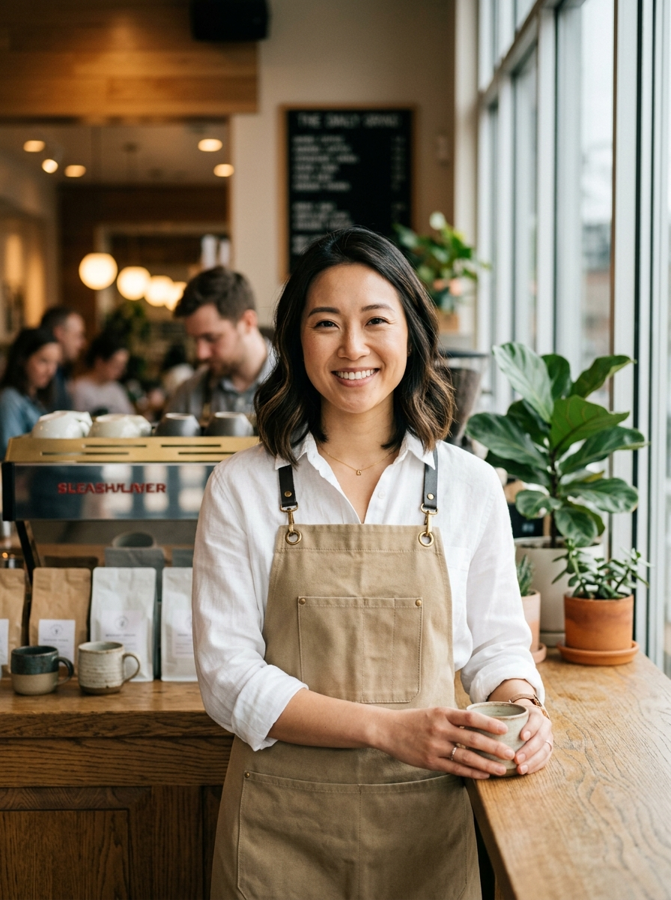

陳安妮 (Annie Chen)
陳安妮 (Annie Chen)
創辦人 & 執行長 / 總咖啡師 · Artisan Brew & Co. (精品外帶咖啡小館)
具備企業管理與財務分析背景的精品咖啡創業家。專注於高坪效選址、極致成本紀律、90 秒標準化出杯工藝與數位熟客運營。建立以 NT$ 1,000,000 輕資產啟動，並於 15 個月完全回收投資本金 的標準化微型外帶門市模型，致力將精緻咖啡工藝轉化為兼具高翻桌率與高資本報酬率的可擴展連鎖體系。
Core Competencies
創辦人四大核心競爭優勢
1. 精確財務模型與極致成本紀律
親自編制動態 Google Sheets 損益兩平試算模型，精準量化固定成本 (NT$132,000/月) 與變動成本 (食材25%)。在 100 萬總預算中堅守 15% (15萬元) 的高規格營運安全週轉儲備，確保新店開幕即便面臨氣候波動亦無斷流風險。
2. SCA 國際高級認證與品控 SOP 化
持有 SCA 國際精品咖啡協會高級咖啡師與感官品測認證。制定標準化雙孔義式機萃取參數（萃取率 EY 19–21%、水質 TDS 75–120ppm）。晨間雙軌出杯 SOP 能在 90 秒內完成研磨、填壓、萃取與微奶泡拉花，尖峰產能每小時高達 40 杯。
3. 數據化選址與坪效極大化策略
徹底剔除傳統休閒咖啡館 30–50 坪昂貴低翻桌內用區。專注鎖定 10–14 坪捷運出入口 200 公尺商辦一/二線角窗，租金嚴格壓制在 4 萬元以內。以 60% 吧檯生產區 + 20% 儲藏區 + 20% 快速取餐區配置，創造傳統門市 3.2 倍的驚人坪效。
4. LINE OA 私域流量與企業晨間團訂
導入全無紙化 LINE 數位會員與集點機制，掌握週邊商辦大樓住戶與企業員工名單。設計「08:30 前 LINE 預約手提外送」，由吧檯預先萃取冷萃與批次熱美式，免去外送平台 35% 抽成，牢牢鎖定每週超過 200 組企業高黏著晨間訂單。
Track Record
專業經歷與實戰成果
創辦人兼營運負責人 · Artisan Brew & Co.
統籌完成 100 萬天使啟動模型架構、品牌視覺 VI 設計、74.2% 高毛利菜單研發、雲端 POS 串接及 12 週開店實施時程。
營運店長 / 研發品控組長 · 知名精品連鎖咖啡
管理單店年營收 NT$ 780 萬之繁忙捷運門市，領導 8 位正兼職員工。優化晨間出杯動線使尖峰期出杯速度提升 28%，將門市食材損耗率壓低至 1.8% 以下。
餐飲營運與坪效分析師 · 連鎖加盟管理顧問公司
負責評估雙北商圈 30+ 處零售餐飲店點之人流動線、租金投報比 (Cap Rate) 與商圈競合分析，建立標準化評估審查表。
Credentials
專業證照與學歷背景
- Barista Skills Professional (高級咖啡師國際認證)
- Sensory Skills Intermediate (感官風味品測認證)
- Brewing Intermediate (金杯金粹率沖煮認證)
主修零售連鎖營運，副修財務管理與會計財務分析
具備完整門市食品安全、水源檢測、動線衛生標準建置資格
天使輪募資提案與投資人權益規範
股權架構與出資比例
總啟動資本 NT$ 1,000,000。創辦人全職投入經營技術股佔 55%；天使投資人出資 NT$ 450,000 佔股 45%，創辦人具經營主導權以確保門市執行力。
加速回本季度分紅政策
為保障投資人風險，開幕前 15 個月每季提撥稅後淨利之 50% 進行現金分紅，優先返還投資本金。預估於第 15 個月完全還本後，轉為常態穩定季度盈餘分紅。
退場機制與二店優先認購
首店模型驗證成功並累積 NT$ 3.66M 現金流後，天使投資人享有二號連鎖直營店的優先平價認股權；滿三年可選擇股權溢價回購退場或持續享受集團分紅。
投資人具備專屬權限，隨時在線調閱 Google Sheets 雲端財務流水帳與每月 POS 銷貨報表，絕無黑箱作業。
投資人實質審查資源專區 (Due Diligence)
歡迎隨時調閱我們已建置完成之商業企劃案全套生態系，檢驗各項數據與財務邏輯：